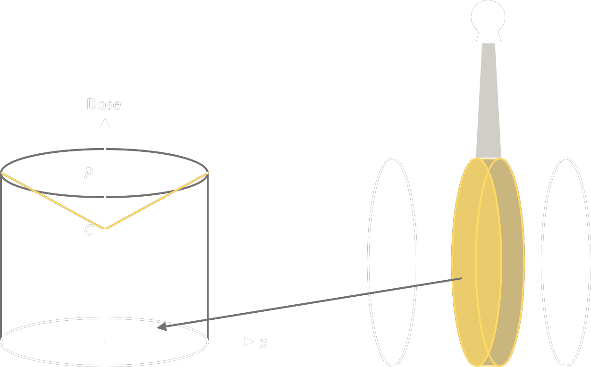

| Generation | Beam | Detector | Scan |
| 1st | Single Ray | Single |
|
| 2nd | Narrow Fan Beam |
Short Row Linear |
|
| 3rd | Fan Beam | Single Row Curved |
|
| 4th | Fan Beam | Whole Ring |
|
| 5th | Firing e- to the ring target installed along the bore |
||
| 6th | Fan Beam | Single Row Curved |
helical scanning = patient table moving while scanning |
| 7th | Cone Beam | Multislice Curved |
| X-ray Tube |
|
|
| Detector |
Recent Design (Scintillation)
|
| CT Number |
\[ \large CT~Number = 1000 \left( { \mu - \mu_{water} \over \mu_{water}} \right) \]
where \(\mu\) = Linear attenuation coefficient of tissue \(\mu_{water}\) = \(\mu\) of water in standard pressure and temperature Unit: Hounsfield Unit |
| Window Width |
Range of HU displayed
|
| Window Level | HU value of the centre |
| Pitch (P) (for helical CT only) |
\[ \large P = {d_{couch} \over s } \]
where \(d_{couch}\) = couch moving distance in 1 gantry rotation s = total slice thickness P = 1 when gantry rotation is moving at the same speed as the patient table P < 1 faster P > 1 slower |
| Isocentre |
= centre of CT gantry rotation | slice thickness and pixel size is defined at isocentre!! |
| Beam Width |
Single Slice
z-axis FWHM dose profile at isocentre
Multi-slice
z-axis non-penumbra region
|
| Machine Conditioning |
1. Air Calibration
During Operation 2. Spectrum Correction
3. Detector Correction
|
| Calibration During Operation |
1. Dynamic Calibration
2. Dynamic Reference
|
| Reconstruction |
Filtered Back Projection
Assumption
Model-Based Iterative Reconstruction
Statistical Noise Model
*we want constant noise throughout the volume |
| MAR |
= Metal Artifact Refuction Algorithm |
| CT Dose Index (CTDI) |
CTDI100
\[ \large CTDI_{100} = {1 \over n~T} \int^{+50~mm}_{-50~mm} D(z)~dz \]
where
n = number of slice in 1 rotation
T = width of 1 slice -50 mm to + 50 mm = position along the central axis CTDIweighted
\[ CTDI_w = { {2 \over 3} CIDI_{peripheral}} + { {1 \over 3} CTDI_{centre} } \]
Derivation:
Assuming PDD of kV beam in CT attenuates linearly,
Let P = dose at periphery, C = dose at centre, r = radius of phantom Area under curve integrated over the whole phantom circular surface \( = \large\pi r^2 P - \frac{1}{3}\pi r^2 (P-C)\) \( = \large\pi r^2 (P - \frac{1}{3}P + \frac{1}{3}C)\) \( = \large\pi r^2 (\frac{2}{3}P + \frac{1}{3}C)\) \( = \large\pi r^2 (CTDI_w)\)  CTDIvol
\[ CDTI_{vol} = \frac{CTDI_w}{P} \]
where
P = pitch
DLP
DLP can be converted to Effective Dose with conversion factor (ICRP 60, 103)
\[ DLP = \frac{CTDI_{vol}}{nT} \]
Factors affacting effective dose
CNR → CTDIw
Coverage → DLP and Effective Dose
Machine
|
| SSDE (Size Specific Dose Estimation) |
|
| ESD (Entrance Surface Dose) | \[ ESD = \frac{mAs}{200} n~CTDI_{100, p} \] |
| Paediatric CTDI |
Some machines display CTDIvol with conversion factor in paediatric protocols to compensate the effect of patient size |
| Flying Focal Spot |
:) longitudinal (z direction) resolution
↓ spiral artefact Mechanism
Collimation = 32 x 0.6 mm
but Resolution = 64 x 0.3 mm |
| QA |
1. Image Quality
3. CT Number Linearity 4. Slice Sensitivity Profile
9. Head Leakage |
| Noise |
CNR
Considering background
\[ CNR = \frac{ |{ROI - ROI_{bg}}| }{ \sqrt{SD^2 + {SD_{bg}}^2} } \]
SNR
\[ SNR = \frac{{\mu^2}}{\rho^2} \]
|
| Cause | Artefact | Remedy | |
| Beam Hardening | Cupping |
|
|
| Streaking/Dark Bands | |||
| Partial Volume in z-direction | ↓ slice thickness | ||
| Multislice CT | Windmill Spiral Artefact
In helical mode, several row of detectors contribute to a single reconstruction slice
|
||